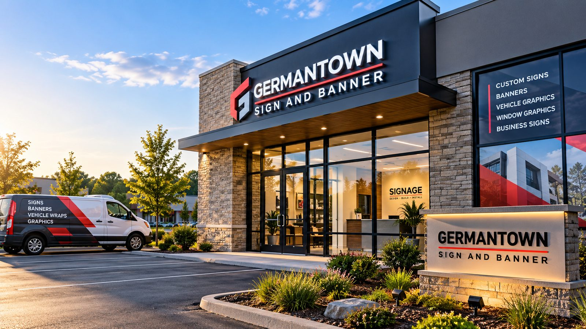
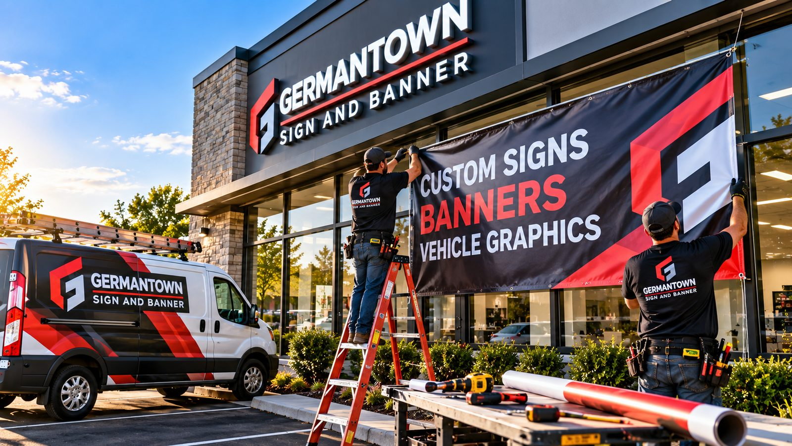
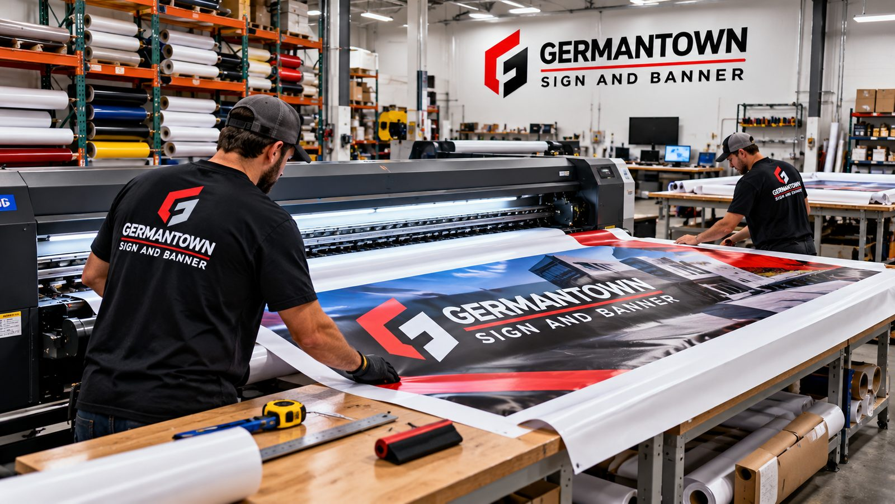

Germantown's trusted sign company for custom business signs, banners, graphics & branding
We design, fabricate, and install custom signs, banners, vehicle graphics, and visual branding for businesses throughout Germantown, Wisconsin — helping you make a strong first impression and get noticed.
Call us now: (262) 600-3935

Request A Callback
Tell us about your project and we'll follow up to schedule a consultation.
Germantown's trusted sign company for custom business signs, banners, graphics & branding
Welcome to Germantown Sign and Banner, your local source for high-quality custom signs, banners, vehicle graphics, and visual branding solutions. As a leading sign company serving Germantown, WI, we help businesses create memorable first impressions, increase visibility, and attract more customers through professionally designed signage.
Whether you're opening a new storefront, updating your brand, promoting an event, or expanding your business presence, effective signage is one of the most powerful marketing investments you can make. A well-designed sign works around the clock, helping customers find your location while reinforcing your brand every day.
We provide complete sign solutions from concept and design to fabrication, installation, and maintenance — working with businesses of every size throughout Germantown and the surrounding communities. If you're searching for Signs Germantown WI, Business Signs Germantown WI, or a dependable Sign Company Germantown WI, you've come to the right place.
Signs we've designed, built, and installed
A look at recent projects — from storefront signage to large-format printing in our shop.

On-site installation
In-house fabricationWhy Choose Germantown Sign and Banner?
Businesses throughout Germantown choose us because we provide exceptional service, superior craftsmanship, and personalized attention from start to finish.
Local Expertise
We understand the local commercial environment and what it takes to create signage that attracts attention in Germantown.
Professional Design
Our experienced designers create signage that reflects your brand while maximizing visibility and readability.
Quality Materials
We use durable materials engineered to withstand Wisconsin's weather, including snow, rain, wind, and seasonal change.
Customer-Focused Approach
Communication and responsiveness matter as much as craftsmanship. Our goal is to exceed expectations on every project.
Turnkey Service
From consultation and design through manufacturing, permitting, installation, and maintenance, we handle every step.
Exterior Business Signs That Get Noticed
Exterior signage is one of the most important investments a business can make. Your outdoor sign acts as a silent salesperson, promoting your company every day and night — increasing visibility, improving brand awareness, and driving foot traffic.
Channel Letter Signs
Individually crafted, illuminated letters offering a clean, modern, professional appearance for retail, restaurants, healthcare, and offices.
Monument Signs
A prestigious entrance for office complexes, residential communities, churches, schools, and commercial developments.
Pylon Signs
Elevated signage that attracts customers from greater distances — ideal for shopping centers, gas stations, hotels, and restaurants.
Cabinet Signs
A versatile, cost-effective solution with excellent visibility, accommodating custom graphics and illuminated displays.
Interior Signs That Create Exceptional Experiences
While exterior signs attract customers, interior signage helps guide, inform, and impress them — contributing to a positive experience while reinforcing your brand throughout your facility.
Lobby Signs
Custom lobby signs using acrylic, metal, dimensional lettering, and illuminated elements that set the tone for every visitor.
Office Identification Signs
Clearly labeled offices, meeting rooms, and departments that improve organization and navigation.
ADA-Compliant Signs
Accessibility signage that meets applicable requirements while staying consistent with your branding.
Wayfinding & Directional Signs
Clear directions that improve traffic flow and reduce confusion in larger facilities.
Wall Graphics & Murals
Custom wall graphics and large-format murals that turn ordinary walls into branding opportunities.
Vehicle Graphics and Vehicle Wraps
Your vehicles travel throughout Germantown and neighboring communities every day — why not turn them into mobile advertisements? Vehicle graphics provide continuous brand exposure and are one of the most cost-effective forms of advertising available.
Full Vehicle Wraps
Transform your vehicle into a rolling billboard with vibrant, full-coverage graphics.
Partial Wraps
Achieve a professional appearance while staying within budget.
Fleet Graphics
Create a consistent brand image across multiple vehicles.
Vinyl Lettering
Display your company name, phone number, website, and services on trucks, vans, and trailers.
Window Graphics
Increase visibility while maintaining driver visibility and safety.
Signs for Every Industry
Every industry has unique signage needs. We work with businesses across numerous sectors throughout Germantown.
Retail Stores
Attract shoppers and increase foot traffic with eye-catching storefront signage.
Restaurants
Drive visits with illuminated signs, menu displays, promotional banners, and window graphics.
Medical Offices
Create a welcoming, professional environment with monument signs and wayfinding systems.
Corporate Offices
Strengthen brand identity with custom building signs, lobby displays, and directional signage.
Manufacturing Facilities
Improve safety, navigation, and branding with custom industrial signage.
Schools and Churches
Provide clear communication and enhance visibility with monument signs and banners.
Property Management Companies
Create consistent branding across apartment communities and office parks.
Germantown and the surrounding communities
We partner with businesses throughout Germantown and neighboring communities across the greater Milwaukee area.
Bringing confidence and peace of mind is our mission
From the initial design consultation to the final installation, the team exceeded our expectations. Our new reception sign transformed our office and gives clients a great first impression. They were professional, punctual, and the quality is outstanding.
Sarah M.Customer
The team listened to our ideas and helped us create custom signs that matched our brand. Installation was quick, clean, and hassle-free. We'll definitely use them again.
Jason R.Customer
We hired them to create ADA-compliant room signs, directional signage, and lobby graphics for our clinic. Everything was completed on schedule, and patients have commented on how much easier it is to navigate our office now.
Dr. Michael C.Customer
Our Sign Creation Process
Discovery Consultation
We learn about your business, goals, branding, and project requirements.
Design Development
Our creative team develops custom concepts tailored to your needs.
Manufacturing
Using quality materials and advanced production methods, we fabricate signage built to last.
Installation
Our professional installers ensure your sign is properly installed and positioned for maximum visibility.
Ongoing Support
We remain available for maintenance, repairs, upgrades, and future signage needs.
Invest in Signage That Delivers Results
At Germantown Sign and Banner, we help local businesses succeed through signage that combines creativity, craftsmanship, and durability.
or call us directly at (262) 600-3935